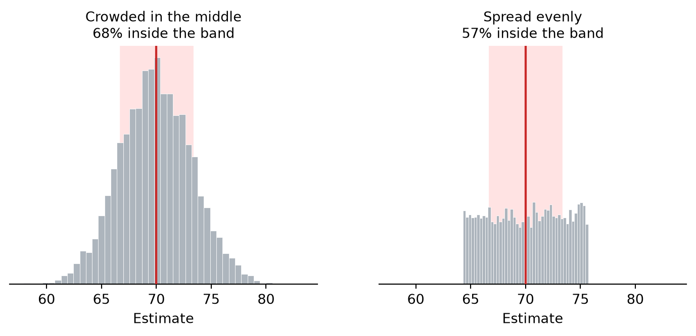
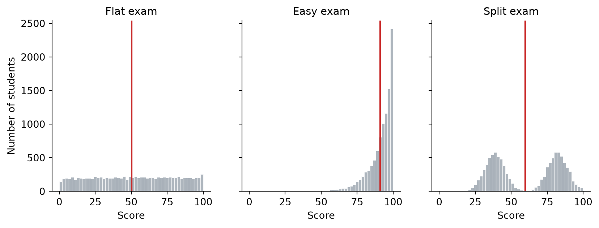
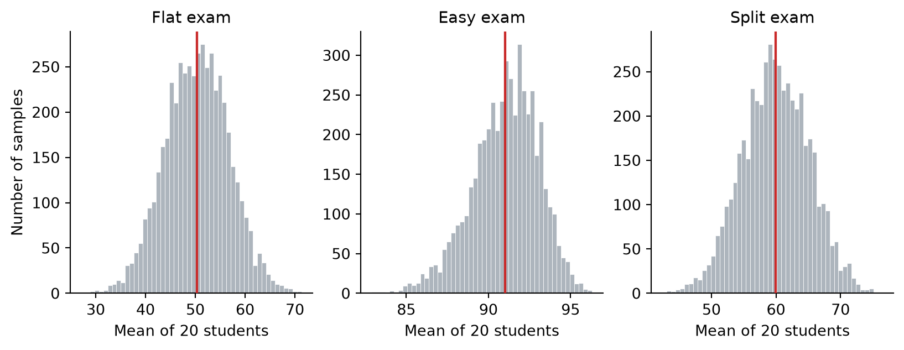
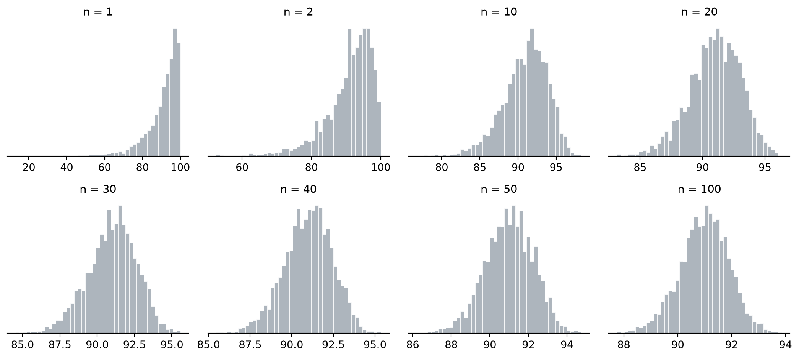
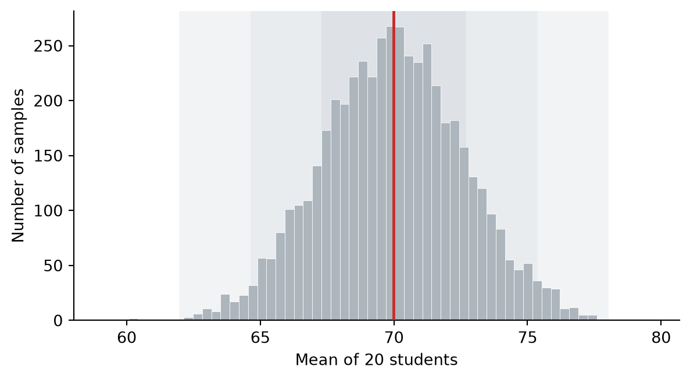

import numpy as np
import matplotlib.pyplot as plt
rng = np.random.default_rng(68)
population = np.clip(np.round(rng.normal(70, 12, 10_000)), 0, 100)
our_sample = rng.choice(population, 20, replace=False)3 Normal Distribution and Central Limit Theorem
Keywords: normal distribution, central limit theorem, 68-95-99.7 rule
In the last chapter we measured the standard error of the mean: 3.3. We said it was about the estimator rather than about the students, and left it there. This chapter is about what has to be true before a number like that can tell us anything.
3.1 A standard error is not a percentage
Here is a question it ought to answer. Our twenty students averaged 70.80. Suppose a colleague draws a different twenty from the same year and gets 74. Is that a normal amount of disagreement between two samples, or did one of us get unlucky?
We know the estimates scatter by about 3.3 points, so a gap of three between two of them does not look alarming. But “does not look alarming” is not an answer. We would like to say how often two samples disagree by that much.
rng_shape = np.random.default_rng(7)
SE, TRUTH = 3.3, 70.0
crowded = rng_shape.normal(TRUTH, SE, 5_000)
half_width = SE * np.sqrt(3)
even = rng_shape.uniform(TRUTH - half_width, TRUTH + half_width, 5_000)
fig, axes = plt.subplots(1, 2, figsize=(9, 3.2), sharex=True, sharey=True)
for ax, estimates, title in [(axes[0], crowded, "Crowded in the middle"),
(axes[1], even, "Spread evenly")]:
inside = np.mean(np.abs(estimates - TRUTH) <= SE)
ax.hist(estimates, bins=45, color="#adb5bd", edgecolor="white", linewidth=0.3)
ax.axvspan(TRUTH - SE, TRUTH + SE, color="#ffe3e3", zorder=0)
ax.axvline(TRUTH, color="#c92a2a", linewidth=1.6, zorder=4)
ax.set_title(f"{title}\n{inside:.0%} inside the band", fontsize=10)
ax.set_xlabel("Estimate")
ax.set_yticks([])
ax.spines[["top", "right", "left"]].set_visible(False)
plt.show()
print(f"Standard error, left: {crowded.std(ddof=1):.1f}")
print(f"Standard error, right: {even.std(ddof=1):.1f}")
Standard error, left: 3.3
Standard error, right: 3.3The standard error by itself cannot get us there. Look at Figure 3.1. Both sets of estimates have a standard error of 3.3 and both are centered on the truth, but the red band catches 68% of them on the left and only 57% on the right. Same standard error, different percentage, because the estimates are arranged differently inside it.
But what if estimates always came out bell-shaped, like the left panel?
3.2 Three strange year groups
Here are three more exams, taken by year groups of the same size. None of them behaves like our statistics exam.
rng_shapes = np.random.default_rng(1859)
# A test that separates nobody: scores land anywhere between 0 and 100.
flat = np.round(rng_shapes.uniform(0, 100, 10_000))
# A test that is far too easy: nearly everyone near full marks, a tail below.
easy = np.clip(np.round(100 - rng_shapes.exponential(9, 10_000)), 0, 100)
# A test you either prepared for or did not: two clumps, little in between.
split = np.clip(np.round(np.concatenate([rng_shapes.normal(38, 7, 5_000),
rng_shapes.normal(82, 7, 5_000)])), 0, 100)
for name, scores in [("Flat", flat), ("Easy", easy), ("Split", split)]:
print(f"{name:6s} mean {scores.mean():6.2f} sd {scores.std():6.2f}")Flat mean 50.38 sd 28.69
Easy mean 90.99 sd 9.07
Split mean 59.82 sd 22.94fig, axes = plt.subplots(1, 3, figsize=(10, 3.2), sharey=True)
panels = [(flat, "Flat exam"), (easy, "Easy exam"), (split, "Split exam")]
for ax, (scores, title) in zip(axes, panels):
ax.hist(scores, bins=range(0, 102, 2), color="#adb5bd",
edgecolor="white", linewidth=0.3)
ax.axvline(scores.mean(), color="#c92a2a", linewidth=1.6, zorder=4)
ax.set_title(title, fontsize=11)
ax.set_xlabel("Score")
ax.spines[["top", "right"]].set_visible(False)
axes[0].set_ylabel("Number of students")
plt.show()
Nothing in Figure 3.2 resembles our year group.
Now draw twenty students from each, take the average, and do it five thousand times.
def sample_means(scores, n, generator, repeats=5_000):
"""Draw n students, take their mean, repeat."""
picked = np.array([generator.choice(scores.size, n, replace=False)
for _ in range(repeats)])
return scores[picked].mean(axis=1)
flat_means = sample_means(flat, 20, rng_shapes)
easy_means = sample_means(easy, 20, rng_shapes)
split_means = sample_means(split, 20, rng_shapes)fig, axes = plt.subplots(1, 3, figsize=(10, 3.2))
panels = [(flat_means, "Flat exam"),
(easy_means, "Easy exam"),
(split_means, "Split exam")]
for ax, (means, title) in zip(axes, panels):
ax.hist(means, bins=50, color="#adb5bd", edgecolor="white", linewidth=0.3)
ax.axvline(means.mean(), color="#c92a2a", linewidth=1.6, zorder=4)
ax.set_title(title, fontsize=11)
ax.set_xlabel("Mean of 20 students")
ax.spines[["top", "right"]].set_visible(False)
axes[0].set_ylabel("Number of samples")
plt.show()
Somehow the original shapes have not carried over into the averages! Now they all look like the left panel of Figure 3.1. The averages are bell-shaped, even when the populations were not. The bell-shaped histogram is called the normal distribution.
3.3 How large is large enough?
Not every average is normal, though. Think about what an individual score is: it is the average of a sample of size one. So look back at the easy exam in Figure 3.2, the one jammed against full marks with a tail trailing left. That is what averages look like when \(n = 1\), and nothing about it is bell-shaped. At twenty it was. So somewhere in between the shape changed, and we can infer that the distribution of averages approaches a normal distribution as the sample size gets larger. Let’s see how.
sizes = [1, 2, 10, 20, 30, 40, 50, 100]
fig, axes = plt.subplots(2, 4, figsize=(11, 5))
for ax, n in zip(axes.ravel(), sizes):
means = easy if n == 1 else sample_means(easy, n, rng_shapes)
ax.hist(means, bins=45, color="#adb5bd", edgecolor="white", linewidth=0.3)
ax.set_title(f"n = {n}", fontsize=11)
ax.set_yticks([])
ax.spines[["top", "right", "left"]].set_visible(False)
plt.tight_layout()
plt.show()
At \(n = 2\) the averages are still dragged hard to the left. By ten the tail is thinner, by twenty it is faint, and from thirty onwards the panels are hard to tell apart from a bell.
Thirty is where the convention sits, and you will see it quoted everywhere as the point at which a sample counts as large.
Which means the twenty students we have been using all along are, technically, not quite large enough. However, we happen to know our year group is bell-shaped, because we built it that way, so twenty was never going to cause us trouble.
Treat the thirty as a rule of thumb rather than a threshold. Nothing happens at thirty that did not happen at twenty-nine. Plenty of real research runs on fewer than thirty subjects, for reasons of cost, access or ethics.
The fact that the distribution of sample means approaches a normal distribution as the sample size gets larger, whatever the shape of the original population, is called the central limit theorem.
This is why the normal distribution is everywhere in statistics, and it is not because measurements are usually normal. Incomes trail off to the right or reaction times cannot go below zero. The normal distribution turns up because we spend our time looking at averages, and averages go normal even when the things being averaged do not.
3.4 68, 95, 99.7
So the shape of the sample means is settled. It is normal. And the normal distribution comes with fixed proportions attached. A given number of standard deviations either side of the center always captures the same fraction of the whole, no matter what is being measured.
For sample means the relevant standard deviation is the standard error. One note before we use it. We work with the true standard error of 2.67 here rather than our sample’s estimate of 3.3, because drawing bands needs one fixed width and \(s\) changes from sample to sample. What happens when the estimate is all you have and when you don’t have the population parameters is the next chapter’s problem.
So mark out three bands either side of the true mean: one standard error wide (2.67 points), two (5.34), and three (8.01). Then count how many of the 5,000 estimates fall inside each.
rng_sim = np.random.default_rng(2024)
means_20 = sample_means(population, 20, rng_sim)
se = population.std() / np.sqrt(20)
truth = population.mean()
for k in [1, 2, 3]:
inside = np.mean(np.abs(means_20 - truth) <= k * se)
print(f"Within {k} standard error{'s' if k > 1 else ' '} "
f"({k * se:5.2f} points): {inside:6.1%}")Within 1 standard error ( 2.67 points): 68.8%
Within 2 standard errors ( 5.34 points): 95.6%
Within 3 standard errors ( 8.01 points): 99.8%fig, ax = plt.subplots(figsize=(7, 3.6))
ax.hist(means_20, bins=60, color="#adb5bd", edgecolor="white", linewidth=0.3)
for k, shade in [(3, "#f1f3f5"), (2, "#e9ecef"), (1, "#dee2e6")]:
ax.axvspan(truth - k * se, truth + k * se, color=shade, zorder=0)
ax.axvline(truth, color="#c92a2a", linewidth=1.8, zorder=4)
ax.set_xlabel("Mean of 20 students")
ax.set_ylabel("Number of samples")
ax.spines[["top", "right"]].set_visible(False)
plt.show()
Around 68%, 95% and 99.7%. Those three numbers are worth memorizing.
So a standard error of 2.67 means this: about two thirds of the time, a sample of twenty lands within 2.67 points of the truth, and about 95 times in 100, within 5.34.
One thing still stands in the way. Every number in this section leaned on the true standard error of 2.67, and we only have that because we built the year group ourselves and can look up \(\sigma\). A real study cannot. It gets 3.3 like we got in the last chapter, or whatever its own sample hands over, with no way to check it against anything.
So we are closer than we were. The shape is settled, and with the shape comes the arithmetic that turns a standard error into a percentage. What is still missing is a way to use that arithmetic when the standard error is itself only an estimate.